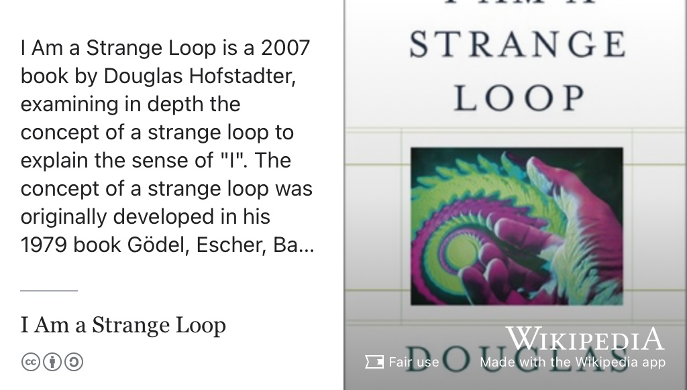

31 Todd’s Story
Meet Todd Davies, shown in figure 31.1, he graduated with a Bachelor of Science degree in Computer Science in 2016. During his study he did internships at Google and Morgan Stanley before returning to Google as a graduate software engineer where he became interested in competition law. He enrolled on a Masters degree in Policy and Technology at the Technical University of Munich before starting a PhD in competition law at University College London. This interview took place in the autumn of 2025, the final year of his PhD.
Figure 31.1: As part of this episode, we recorded a short walk and talk video discussing what Todd has been doing since graduating from the University of Manchester in 2016. You can watch the video above and at youtu.be/9oCSds8kFcg. Thanks to Niki Taylor, Jez Lloyd, Bee Mistry-Bhudia and Kory Stout for organising, shooting and producing the video. 🙏
Listen to the episode by clicking Play ▶️ below, or subscribing wherever you get your podcasts, see section 30.2. An annotated and edited transcript of the audio is shown below.
The transcript below was machine generated and subsequently edited by Todd, thanks again Todd. 🙏
31.1 What’s Your Story Todd?
Welcome Todd, thank you for coming on hearing your future. Could you start by saying a little bit about who you are? Yeah. How are you came to be here today?
Thank you so much for having me. It’s great to be on the podcast. So my name is Todd Davies. I was here back in 2013, originally to do my bachelor’s degree and I’m back here for the open day tomorrow at the Univeresity of Manchester where I’ll be speaking in the engineering faculty. And and also, of course, [I’m here] to visit the friends that I have [in the city]. So, I’m always looking for reasons, excuses, to come back.
Good, well, welcome back. Welcome back to Manchester. So, let’s go back right back to the beginning. You obviously chose to study computer science? Can you remember what it was that switched you on to that subject as a possibility when you’re in primary or high school?
I think it was a bunch of things. My earliest memory of being interested in computers, was in primary school. When I saw the IT technician in school typing in the master password into one of the computers, and I dutifully watched what keys she pressed, and then told her oh, the password is such and such. I thought she was going to be quite pleased with me, I think, I must have been five or six or so. She was actually not very pleased with me because she then had to go and change the password and all the different computers. So, I think perhaps it was [that experience]. But also, when I was growing up we went from not having internet to having internet, we went from not having a computer at all to having a computer, etc. So this all kind of came in as I was also coming of age and growing up. So it was something that I was quite naturally drawn to. I remember going going to high school and just always being interested in trying to play with the computers, and then subsequently getting in trouble for “hacking them”.
Penetration testing maybe?
Yeah, I mean that that would be how I would phrase it. That’s not entirely how the school understood it. And then, I guess, I had a combination of the schools, uh encouragement, uh and my parents encouragement, to kind of take it in a slightly more productive direction.
To be honest, I lived in a place that was quite far from where a lot of my school friends would live. So in the evenings, on the weekends, I would have a lot of time with me and my siblings. There’s only so much time you can spend with your brother and sister, really. So I ended up, you know, computer programming quite a lot.
And was it was it a social thing as well? Were you socialising with your friends online at that time?
Yeah, surprisingly. So so I have two big memories of this. The first, it was like in the internet forum days? There were like forums and stuff with white hat and grey hat hackers. I was always into cryptography stuff, and I was trying to make my own encryption algorithms, which were inevitably like an absolutely disaster. That kind of stuff. And also, I had a friend who was in the US, and he was making apps and websites all the time. So he would be making a website, and I would be making the companion Android app for that website. We made a password manager together, we made a homework tracking app together. That was the first time I got paid to do programming! It was really a lot of fun to have a cross Atlantic collaboration with someone who I’d never met which, which was was quite good. I remember making an Android app called Push-up partner. Basically you would put [the app] on [your] smartphone, put the smartphone on the floor and then, as you would do a push-up, you would touch the smartphone with your nose and it would count how many you’ve done. So really, [the whole] “there’s an app for that” [era], that was my coming of age programming story.
Was [computer science] a subject that you studied at GCSE or A-level? Or was it something that you were just doing this on the side, basically? So was it offered at your school? Did you decide not to do it because you could teach it yourself?
Yeah. I think I wasn’t really pushed in that direction at all by school. I originally wanted to become a doctor actually, [but] I found chemistry extremely hard, which which made me think twice about becoming a doctor, so then this idea of transitioning into more computing stuff became more interesting. And at high school, there was no computing course. I also, honestly, didn’t like maths. I distinctly remember getting uh, was it 14% in a maths test at school. And even though [I was bad enough at maths to get] 14%, I knew 14% wasn’t very high.So I wanted to try really hard for the next exam, but then proceeded to get 12% on a subsequent test. So maths was something was really difficult for me at school, and because of that, I was also worried about whether I could be successful as a as a computer scientist as well. I was always looking at the the maths grade to get in[to study CS at uni], and I had to really bust a gut in my A-levels to get the grades to come to Manchester. But yeah, there was there was no um, computer computing, A-levels offered at all.
Which isn’t unusual. I mean, it’s a bit of a minority subject in schools anyway.
Yeah, and honestly, I think having a foundation [and focusing just] in maths was important.
And what A-levels were you doing?
I did maths, biology and physics.
So, you arrived in Manchester in 2013, just over 10 years ago. So can we talk about your journey through the degree? So, imagine you’re right here in first year. What was it like getting to grips for the subject at University having not studied it, other than [by yourself]?
It was strange because I [remember] distinctly having this feeling that some things I knew quite well, because I’d already been doing programming for a while, and other things I didn’t know at all. It was quite a funny dichotomy, in that sense where simultaneously I felt quite confident, and also very underconfident. Especially with some of the maths, [at uni,] there was more decision maths and logic that I had never seen before, outside of [having read] a few books that maybe we can come to later. But then the introduction to programming courses I was really quite comfortable with. Which is good because I think the parts where I was feeling more comfortable gave me confidence, to be able to, you know, keep going with some of the tougher things. I think if it was all a very, very theoretical kind of applied maths course, and then it would have been more challenging for me. But, to be honest, some of my favourite courses later on, in the degree, ended up being those more mathsy, theoretical ones! I just took a while to warm up to some of that.
You did an internship at the end of your first year, talk to us about how you went about getting that. Ohh, and I think you actually did internships in high school as well?
Yeah.
So where you came to uni, you were already on the ball when you got here… So how how did that all happen?
Well, I think “on the ball” is a bit of a generous phrasing actually. What actually happened is that my parents were pushing me to get a summer job in school, and the thought of waiting on (in a restaurant) or something was a bit scary [to me]. So, I was always thinking, how can I not do that? I ended up sending some desparate emails to some web development companies close to where my parents lived, who were nice enough to take me on as this, like, 16 year old kid who claimed that he could write websites… when he actually couldn’t really write websites very well at all. So I had done these two different web development internships over the summers [prior to uni].
I guess that probably helped a little bit becuase your CV was by then a little bit stronger than perhaps a lot of undergraduates. I speak to lots of students where they say, “I don’t have any experience”, and that is okay, a lot of people are in that situation, but you were in a, perhaps a bit of a stronger situation because you had these projects on your CV that set you apart from your competitors.
Yeah, I think it also helped give me a little bit again of confidence. We had these careers days at Manchester where lots of different companies would come in and they would all set up stalls so students could go and talk to them. That’s how I got my first “real” internship, which was at Morgan Stanley, an investment Bank in London. I remember going into uni, talking to them, and I knew what I was signing up for there. I knew what it was meant to go and do an internship, work in a team, etc. [Going to a big company] was the next step, because I’d already done some other steps [at smaller companies before]. So I think having done [internships] before gave me a little bit of confidence do it again, but a little bit better that time.
So yeah, more of the same, but better paid hopefully, and maybe harder problems. Morgan Stanley is a huge organisation, so there’s kind of a massive!
So I went to Morgan Stanley, it would have been in the summer of 2014, I think, and it was really tough. So basically, they had me in London, in Canary Wharf. I was wearing a suit. And I distinctly remember as a kid, I would watch the television during the financial crisis, and they would have this specific shot of Canary Wharf next to the tube station. There are these clocks with all the timezones from across the world. Whenvever there was a big financial issue, that was the shot they would use. So I would walk past that every day on my way into the office, which was quite surreal for me, as this 19, maybe even 18 year old student. I had this feeling that I was somehow the nerve centre of the UK economy or something.
And not just the UK economy!
Right, and what they had me doing was Scala, which is a functional programming langage. Thankfully it’s of similar to Java, in a sense, that it runs on the same virtual machine.
But this was your first exposure to functional programming at this point, right? It was your first exposure to it?
So I’d read, what’s it called? The Little Schemer, a book about Lisp, which gave me a very theoretical and incredibly impractical understanding of what functional programming is…. And then I get to Morgan Stanley, where they have this enterprise level Scala stack, and I’m absolutely 100% over my head, and I don’t know what’s going on. That was that was honestly quite tough. It was, quite formative for me to be under that pressure. And also little things too, like wearing a suit! I wore a suit all through school, so it wasn’t unusual, but somehow being in a big, big office was really scary.
And did you have to wear a suit? Because I guess programmers in banks don’t always wear suits.
Yeah, I don’t know if that’s still the same now, but back then people were wearing suits. It was in the back office, but even so, people were wearing suits.
You must have had good support from your team, the people around you to explain, you know, the stuff that you weren’t you’re struggling with. So you had good support I guess? What so what then happened coming back to University? We’re now into second year. Were you then looking at doing another summer internship again in the next summer? I know that you didn’t do an industrial placement, but were you thinking about applying for other stuff?
Well, yeah, despite Morgan Stanley being difficult, it didn’t put me off! I really enjoyed it! It’s good to be clear about that. Plus, I think in general, I’m not someone who shies away from difficulties.
That was also probably why it was enjoyable, right? Because they’re giving you proper work to do. That is important and consequential. It’s not just thing that never sees the light of day you’re actually working on software that’s being used by hundreds or thousands of users, potentially, so you’ve kind of got to get it right?
Yeah. So I came back in second year, and already I had this question in my head: what am I gonna do next summer? Probably I should have been also thinking about what I was going to do in the courses I was taking that year. And back then, the thing to do was to try and work in Big Tech. It probably still is, althought I haven’t found out what out current students are thinking to be honest. Um, maybe there’s a stronger focus on AI these days. I’m not sure.
I think big Tech’s always going to be a draw, just because the brand. Yeah, is pulls people in, doesn’t it? And it’s well known. It’s often what People think of when they think of computer science they think of Google Meta, or whatever.
And that was 100% the case for me. So as I was saying before I was building these Android apps when I was when I was young. [I would watch] Google IO, which is Google’s like big flagship conference every year, and I would know the software engineers who would go on stage and announce [new products and features]. I would see them every year, the same people. That was a huge thing for me. And yeah, it wasn’t just Big Tech. It wasn’t just Facebook, or Microsoft, or whoever… I was going to hackathons and other stuff too, but I wanted to go to Google. That was why I really wanted to go. So I applied, for an internship there.
Google only do summer internships, don’t they? There’s no such thing as a year [there] as far as I know? A lot of these big American companies, don’t offer these year long internships, they tend to be summer.
I think occasionally there are slightly different rules that are one year long, but not for a software engineering internship. But I mean, they’re also changing quite often.
I know that some students have managed to negotiate placements, but it never seems to be some something sort of under the counter. If you ask the right person at the right time.
I think there’s often a lot of flexibility for for things like this. You have to when you get your foot in the door, you kind of leverage it a little bit.
So can you talk us through how applying to Google was in your second year? There must have been a quite rigorous selection process. How did you handle all of that? Not that Morgan Stanley was easy. But you must have got some experience of that from doing Morgan Stanley. But how was that journey?
I think that the previous internships were vital to help prepare me for the Google one as well. And the Morgan Stanley selection process to be clear, very rigorous. I mean, I went down to London, I had a full day of interviews. It was tough, and and also also a lot of fun.
For Google, in a sense, it was a lot less. I did two online interviews that were 45 minutes each.
I think you remember telling me a horror story about this, about you having to write code in Google Docs, with no IDE, and it had to compile?
Yeah, basically. You don’t get any help from your editor. You just literally have to type in Google Docs and so later on, spoiler of that I went to Google and I was doing the, the interviews, I was the interviewer (sometimes). As the interviewer, you you’re quite generous to candidates. If [the candidate] can’t remember the name of some obscure API call, it’s fine. Especially if it’s something you can look up, it’s not the end of the world. But at the same time as the candidate, you want to write code [which works!] You don’t want to make those mistakes, you want to try and show mastery the way that this works as much as possible. So while I was doing my second year in Manchester, I was also practising a lot of coding interviews and also practising them in Google Docs becuase I knew that’s the way that would work.
I don’t know if they still do that.
I think now they have an online editor.
Which does at least some of the syntax for you?
Yeah!
So you’re not missing your curly braces are for whatever is?
I’m not sure if it really helps that much though. I think it probably makes you feel a bit more at home when you’re writing it in that kind of editor. But I think, fundamentally if you’re gonna do well, you’re gonna do well, regardless of the editor.
Were you using things like things like LeetCode and HackerRank? I guess hacker rank would have existed? Were you using those or were you?
Yeah, right. I would I would basically like mine the internet for different coding questions and code them out, but I’d also just be reviewing basic algorithms [and data strucutres] too. I wanted to be able to, you know, [take any] the mainstream [algorithm] just code it without without having to make mistakes or without having to go back and refer to [a source], so things like quick sort and merge sort, etc. Those kinds of things. So I’d write them in Google Docs and I would copy paste them into the editor and then compile it, and if it would compile first time, and if it would work without bug, that I’d be like… good. That’s what I want to do in my interview. So I did a lot of prep, long story short, for those interviews. I guess by a combination of being characteristically overprepared and being lucky, they offered me a place!
Are you able to talk about what you were doing at Google?
Yeah, yeah, I can. Well, I think the first thing to mention which was like quite a shock to me [at the time], which was that you apply for Europe. So you apply to all of the offices simultaneously in Europe, and in my head was going to go to the London office. But they actually offered me was a place in Munich. This was a huge thing.
Speak German?
Well, I do! Spoiler alert! Although it’s not very fluent. And to be honest, I had never left the UK [before], exceot once to go to Florida, which is not entirely, you know, worlds apart from the UK culturally speaking. I remember landing in Germany, and being like a rabbit in the headlights. I had no idea what was going on. I had no idea where to go, how to use the the underground there. Etc, etc. So it was a huge transition for me.
But to answer your question, though… What was I doing? So back then I was working in the families team. Essentially, that team was part of the Google Accounts team. So, you know, a lot of people have Google accounts, and that team manages that “construct” within within Google’s system. My team’s job was to manage the relationship between an adult’s account and their child’s accounts.
Ahh, so FamilyLink?
Yes, yeah, yeah. So I spent a lot of time doing FamilyLink things, which obviously intersects a lot with regulation, and privacy, and security and also ethics as well. So it was quite an interesting area to work in. Although as an intern, mostly, you get a project and you’re quite far removed from these kind of more exciting discussions. But the project is exciting enough.
So that’s your summer, at the end of your second year, you’re now into final year. So can you talk us through your final year project? Can you say a little bit about what your third year project was?
Yeah, yeah. So I my third year project was one I came up with [myself, (as opposed to being assigned it)], mainly because I always been interested in parallelism, which is [about] taking some computing task and trying to do it more quickly by running it on multiple cores at once. Or having multiple processors do it. So back then, there was this the rise of GPU computing. So, software usually runs on the CPU and which nowadays might have quite a lot of cores, but back then, you know, maybe had two or four cores. But GPUs, by contrast, well these days, they have a humongous number of cores, but back then there were maybe 500 cores. I think the machine I was using had like 90 or 128 cores or something like that. Basically, long story short, GPUs have a lot more parallel processing power than a CPU.
My project was to try and speed up a text mining pipeline. So a pipeline that would ingest large amounts of text and extract insights from [it]. Specifically I took one part of that pipeline called the “part of speech tagger”, which looks at every word and asks, is this a noun? Is this a verb? Etc… which sounds like an easy task, but there’s a lot of edge cases which make it a bit more difficult. My project was about running it not on the CPU, but trying to parallelise it by running it on GPU where it could be faster. And it worked! It worked well enough for the project, at least.
Who was your supervisor?
Richard Neville.
I guess it was kind of fun because it was a quite open-ended project where you kind of just follow your nose basically and find find an interesting problem and try and solve it as best you can?
Yeah. And that was maybe my very first introduction to research I think. So, I was reading papers, trying to engage with the literature a little bit, and yeah, by coming up with a problem and trying to solve, it not knowing whether it was actually going to work out, but doing the research regardless.
I think that third year project is quite a big transition for a lot of people, because you you’ve gone from mostly engineering and maths, but then the big output of the third year project isn’t just the software, it’s the actual written report which is describing the problem you’ve solved, and also explaining why the problem is important, how other people have tried to solve that same problem, etc. I know some people struggle with that more than others. How did you find the process of writing a big, long report, which is probably the first big long report that you’ve done?
Actually, it’s funny you should mention that. I did this really unusual thing in my undergrad where I produced these [revision] notes.
Ahh yess, “Todd’s notes”.
Yeah, so, I was quite used to producing these kind of like rather longish LaTeX documents. Because what I would do is, as I was doing the courses at Manchester, I would try and summarise them and distil them down into prose as much as I could. For revision purposes. I would then publish [them] after the course.
Would that have that been something you’d done previously, for like A-levels and stuff? Or was this a sort of new thing? You started doing University?
I did do it for A-levels. I think the first ones I did were for my GCSEs. And honestly, I think it started out as a way to procrastinate. I loved to write in LaTeX, and it was just fun to, you know, as I was supposed to be revising for my exams, was much more fun for me to typeset than to actually revise. I think that’s how it started.
But there is also a bit of reflection in there, isn’t there? Because you’re thinking when you’re writing these notes, you’re thinking… what’s this all about? And why would anyone care? Actually those notes were really useful for other people but actually the most useful thing to do is to write them yourself rather than read somebody else’s notes, right?
It was a weird thing for me, that these things I was producing for myself turned out to be useful for other people.
Internet sensation.
No. I wouldn’t go that far.
Well, at least within the Kilburn building?
Hmm, yeah. I think the, the person who learnt the most from them was almost certainly me, because I was the one who was having to kind of figure out “how do I understand this?”, and, “how do I explain it?”.
And then explain it in your own words, rather than the words of your professors or lecturers. Who would use probably different words, most of the time I guess?
Yeah. 100%.
So that was third year. Is there anything more we want to say? I think we’ve covered the interesting stuff probably?
One thing I would say is that I had this dialemma in third year: did I want to do a year in industry? And in the end, I decided not to because I did a few internships before. But my friends [on the course] were all doing years in industry, so that was the dilemma for me. I didn’t want to go and do it, and kind of delay graduation.But at the same time, it meant that the third year that I did, I didn’t do with my some of my best friends who, out and, then came back after you had graduated.
But it worked out fine. In the end, they stayed in Manchester and I still lived with them [while they were working], we just didn’t do the course together.
And I think we always say to students:, it’s good to be flexible and apply for both. Don’t have it set in your head. Apply for everything and you can fit your degree around whatever you find. If you find the right job for you in the right place, and you can work out what sort of degree you want, whether it needs to be three or four years.
Yeah, I think that’s great advice because what you don’t want is to be in a position where you have only bad options. If you can give yourself a few good options, then whatever happens you’ll be fine. But if you end up in a situation where you’re gonna have to make a decision that isn’t what you want - which might turn out to be fine - but probably it’s better better if you can avoid being in that situation in the first place. Easier said than done!
That so that comes to the end of your degree. Normally I ask like people what they’re doing next. You’ve obviously done quite a lot since then, because this is now nine years ago. So the interesting thing is what you’ve done since, because you’ve taken an unusual journey in getting interested in policy around technology and science. So, can you tell us a little bit about how that journey started? You started out as a graduate software engineer. You went back to Google? And then things started happening. So can you talk us through that a little bit?
Yeah, so yeah, I went back to Google, and that was this huge thing. I was absolutely over the moon to go back to Google, and it was wonderful. I had everything! I had the job that I wanted ever since I was a kid, I had a great salary, I lived in a place I’d really come to love, Munich.
I remember you telling me about Google tourism where you could go to different offices and use your ID card to go into the offices. So you could say “ohh, let’s see what the London office is like”.
So I think the culture is slightly changed now, but back then, being being a part of Google was… it was a bit like having access to an exclusive club. I could go to pretty much any capital city, and badge my way into an office, which would have, you know, a gym, and sometimes at swimming pool, climbing gym, you know like all sorts of facilities. I’d do these city trips and just pop in[to the office] for lunch! And often there was a lot of quite vernacular culture in these offices. Like, the Italian office, I remember, the Milan office, and they had great lunch. Great Italian food. So yeah, these aspects of working there were quite special at the time, and I think back then that they kind of perhaps… Google had this special culture, a bit like when it was a startup.
So some of that that still carried on when it was quite a big company.
Yeah. So I remember joining him, they still had these big meetings every Friday where the founders Larry and Sergey, they would go on stage and present. It was really funny. Like Sergey Brin is quite the comic, he would go on stage, then there would be a bunch of slides, but he wouldn’t know what they were. At least it didn’t look like, he knew what was coming. So he would like, look at the slide, and he’d be like “oh, there’s a product lunch that we’ve done this week…. what is it?” And then he would try to figure out what Google had launched, based on this one slide that he’d been given. So it was simultaneously serious, but also quite unserious, and as a result quite funny. That was the the atmosphere. People pushed each other a lot, the quality was very high, but at the same time, there was a culture of having having fun, which is great.
So where did the interest in what do you do now come from?
Yeah, so so not from that actually. I basically have always had a public interest bent in what I wanted to do. So I mentioned that I wanted to be a doctor to begin with, and then one of the things that drew me towards computer science and being a programmer was, basically, when apps like Google Maps came along. I witnessed my parents arguing in the car with their paper maps. My Mum would be trying to read the map, getting car sick, then my Dad would be trying to drive, but he couldn’t read the map while driving etc, etc. And then we got the TomTom, which basically didn’t stop the amount of arguments but did directed the arguments towards the TomTom, which was in itself a big improvement. And then we got Google Maps, which was again a big improvement over that. So in my head, as someone who was growing up in that era, that was what tech was doing. It was creating things that would be useful, and that could make your life better. Yeah. And then I essentially started to be one of the people creating those things!
What were you working on at Google initially?
So I started in the families team as I said.
As a graduate?
Yeah, I went back to the families team, but then the whole team house switched around, and we ended up working on passwords.
This was back to your primary favourite school interest!
Yeah, honestly, passwords have really been a feature of my software engineering career. So yeah, I worked on Google’s password manager, which was a really fun project because a lot of people use it. You can launch code, and you see like, the amount of people using it, and the requests coming in… and there’s a lot of them! And obviously, the stakes are quite high because people security is at risk.
So is that using the Google login on the federated one, where you’re using your Google login on different websites?
So that [(federated sign on)] was part of the kind of wider universe of password management, but specifically, I was working on the password manager that you use when you’re using Android or Google Chrome.
The one that remembers your passwords for you?
Yeah. So that’s what I was doing at Google, and it was a lot of fun! But here’s what got me, kind of thinking outside of that world, if you like. In my head, I had bought into what I would frame as a “Silicon Valley approach” to what the role of technology is in society, which is that we have a bunch of these “problems” and then Tech comes along with solutions to those problems. Like, “I don’t know where I am, I want to go to a coffee shop, but ohh, I have Google Maps and it will tell me exactly where I am, exactly where to go, etc.”
However, I would also wake up to go to work and build the password manager, and I would look at the news. And then on the news, there would be, you know, crushing inequality, climate crisis, there’d be all sorts of geopolitical, you know, issues, which, you know, continue to get worse and worse all the time. And I would look at that, and then at what I was doing… In my head, there’s a few things happening… This is something I put on myself, not on other people, but I would kind of feel a responsibility for some of this stuff. Not that, I think that it’s up to me to, you know, single handedly address it. But, I think I’ve been very lucky in the sense that I had lots of opportunities. And I think, I have the capability to go and think about some of these things, because I was so lucky and I had so many opportunities. And someone has to! Of course, lots of people are. I’m not saying that they aren’t. And also, I would think to myself, this is where this is where the big questions are! This is where some of the real deep stuff is! So I started to think more about that [(those big questions)].
At the start I was really thinking about the climate crisis. I was doing like a lot of research into things like carbon offsets, and I look back at that and think that I was, you know, just starting out, I didn’t really understand the lay of the land in these kind of spheres. At that time, a friend, also Google, pointed out to me that in Germany, master’s degrees are extremely cheap, like 200 euros a semester or something. With public transport bundled in! So basically free. She mentioned that I could got part-time at work, and do a part-time master’s degree. So that was over two years and a half years. That was my trial run [(in the policy world)]!
It’s still quite demanding, because you’re having you’re doing work part-time, and are you doing four, three day weeks for work and then…
Yeah, it was, it was demanding. I think demanding is the word. So I initially went down to 80%, so I was doing 80% at work and then a 66% Masters degree, which of course if you add those two up, it comes to 144%. So that was tough. And then I ended up going down to 60% at work.
You must have been having to take a salary cut as well? Maybe the pay cut isn’t too bad because you’re already being paid a good salary anyway?
Well that, but also, the way that compensation works at these big tech companies is usually you get paid in stock as well as salary. And the stock kind of vests over several years. So what happens is, if you go on to part-time, the stock that you previously earned continues to rest. So, the lower salary kicks in kind of gradually. So you feel the effects of the lower salary most… or some of the effects will only kick in a little later when you get a “new” lower stock grant. I don’t know if that makes sense. So it’s a, what would you call it, a delay.
A lag.
A time lag! That’s the systems dynamics way to say it. Yeah, so that wasn’t too bad. And yeah, I think it was a wonderful time.
Because you were doing something you’re interested in, right? That’s something more important than how much money you’re earning?
It was so fun. Really. I went into I went to study Politics and Technology which was a master of science basically in politics, but looking at how technology changes the way that society works, and then how politics, but also society more broadly, kind of responds to that through regulation, or through changing institutions or also by not responding adequately in some cases, etc., etc. And for the first time, I think I got a little bit of a critical perspective on on technology, if you like and, you know, maybe just coding and coding and coding and coding, was not going to be “it” for us [(collectively)] basically. And that was fascinating.
At that time, it slowly dawned on me that I was working at Google, which is a huge company, and which is a tremendously important company. It’s like it’s gateway to all this information that we see, online advertising is obviously Google’s main business, but that has all sorts of questions about privacy as well. So, this was interesting to me, and to cut a long story short, where I went next from that was I realised that Google was, a monopoly, like in Search, Google has high 90% market shares in a lot of different countries.
It’s kind of like the AT&T of today, right?
It’s it is, but crucially, AT&T was a regulated monopoly. And Google is not quite regulated in the same way, although maybe that’s changing a little bit. And that was an interesting question to me, because I was like, well, why is Google a monopoly? I wanted to know why that was the case? And the the narrative I had as someone who was working Google, was that Google is a very innovative company: it produces the best search engine, the one that people want to use.
And not just the search engine either, it’s all the products that people take for granted like Google Maps, which are essentially free. Well, “free” in inverted commas.
I think free is a good word to use. I think for most intents and purposes it’s free. Like they have this whole ecosystem of products and services. And, and what happened was that I took a course in competition law during my masters.
Competition law?
Yes, so we’ll get on to competition look, probably. And I went to a conference with all these competition law academics, and for them, Google in particular, but also big other big tech, companies were where the big questions were at essentially. And and still are, to a large extent!
Because it [(Google)] does have a competitor in ChatGPT in a sense, but there was no competitor in search? Well, there didn’t used to be.
Yeah… a lot of the questions are quite tricky to define and to grapple with. I think the big difficulty that was there, from like 2012 up until like the early 2020s, was that Google was giving away things for free. So usually if there’s big business, one of the ways that they can exploit power is that they will increase prices for things, you know so you become a monopoly what you do you increase your prices consumers have to pay more, and then you get lots of profit. And this was the mental model, the competition lawyers and competition economists, were using to think about Market power.
Which doesn’t really apply to Google.
Exactly. Yeah. So Tech had taken this, and like, completely turned down its head. And [the competition academics] were really trying to conceptualise, “well, hang on a minute… Google is giving away stuff for free, but like how is it making money? How is it Monopoly?”, and there was these theories of two-sided markets, which basically bring in advertising etc., but no one had quite figured out like, what exactly was going on here. And the big narrative for why Google was a monopoly at the time, was it has all the data, like, Google has access to everyone’s data, it can see all the searches that people make. And I heard this with my software engineering hat on, and I was like “no way”. I wasn’t buying it.
And to this day, you can find academic papers, that will authoritatively tell you that Big Tech is big because they have all the data. But, you know, I was there trying to build these platforms at Google with access to all the data, well, not because Google has very strong controls in terms of what data you can read,etc., but in principle, if there was business interest, you could, you could probably access data that you would need. And the key thing, this [narrative] would miss, of course, which if you’re a tech person, you probably understand quite intuitively, is that well, you might have all sorts of data… But what information does it contain? If I have data about, the the gene sequences that I’ve sequenced from some pigeons, then it’s not going to help me figure out what the next lottery ticket number is. So, this was something I really saw, and there I began to see a gap. I saw “ah, like there was a gap where I understand something about the way these platforms are built, and the way they work, and the way that the competitive dynamics work a little bit”. So [I thought to myself], either I don’t understand [the way that Big Tech works] properly, or these people in this other field that I’ve just kind of dipped my toe in don’t understand it properly. But clearly there’s a gap. So I began to get more interested in this thing called competition law.
And yeah, I don’t want to bore people on that, but competition law is the law which tries to make sure that our market economy remains competitive. So, you can make a company. you can make products that people want to consume. That’s the way that our society works for for, you know, better or worse. And obviously, if you’re a company, you don’t want to compete against other companies, because they will take away your profit. Basically they’ll force you to innovate or force you to drop your prices and things. So you want to insulate yourself from competition, but if you do that, then you’re gonna benefit. But consumers out there [(on the market)] are going to not benefit. They’ll have a worse deal. So competition is about trying to make sure that companies actually compete against each other rather than the pretend to be doing so. It’s like the referee of the market economy. Occasionally, you have competition authorities that call in the VAR, and they say, hang on what, what happened here.
I mean that’s where antitrust law comes in, right? What’s the equivalent of [US] antitrust [in Europe]?
Competition law in Europe [is antitrust law in the US]. We call it competitional law, in the US they call it antitrust law.
Okay, right. I didn’t realise that they were the same thing.
So, then I found myself applying for PhD programs in competition law.
So this is what you’ve been doing for the last four years now at UCL in London. Were there any difficulties in applying? I guess the people you’re competing with to get on the PhD program, but then also, to publish papers, must be coming from very different backgrounds. That must have been quite an interesting journey?
Yeah, well, the first paper I submitted to a journal got quite brutally rejected. Because of [exactly that]. And I think for good reason, I think it was not framed in the right way. But yeah, [overall] it was weird. I think I’m very, very lucky at UCL to have a supervisor who’s very open-minded and can take someone like me who has a quite unconventional background in law. Because, coming in, I had no training at all.
So an interesting question now is, do you think it’s easier for a computer scientist to pick up law, or a lawyer to pick up computer science and technology? I guess it depends a little bit on what their backgrounds are, obviously. But so generally speaking…
I think, generally speaking, it’s easier to go from a kind of… more, I’m not sure if I like the word “hard”, but a harder discipline, it’s more with more mathematical stuff, into a softer discipline like law, like political science, or sociology or something. And the reason why is I think it’s hard to learn maths. It’s hard to go get to grips with with that. And computer science or software engineering really is applied maths, at the end of the day. I think you need to spend a lot of time doing that, and kind of sitting with it, and the thing is, if you’re already quite senior, it’s hard to give yourself that time to fail repeatedly. Although I have to say, during my PhD there’s been a lot of failing repeatedly, but hopefully in a way that is progressive.
I think there are programs like CS50, like CS50 have a program for lawyers, don’t they? There’s a special law version of CS50 I’ve seen interesting, it’s pitched at lawyers. Like you’re a lawyer, but you need to learn how to program, so here’s a flavour of cs50 for you same versions of that but it’s quite interesting.
Yeah, I think it’s still doable, and it’s probably still worth it, but whether it makes sense depends on you. It depends on what you want to do. For what it’s worth, I’ve been teaching the first year law undergraduates in the past two weeks, and there was one of them who had a computer science degree and wanted to do a second degree in law. And I’ve seen people do the other way as well. I have to say though, going and reading law judgements is… it’s also tough.
In a different way. There’s a lot of words that you have to navigate.
Yeah, yeah. It really trains your attention span.
It’s like learning a different language, basically, it’s still written in English… but you were mentioning Latin as well earlier, like is like a laced with Latin?
Yeah. It can be tough.
31.2 Minority report
Okay. So I think we’ve covered your very interesting story and there’s probably a lot more that we could talk about. But, let’s move on to the minority report. I ask people if they identify as being a member of a particular, minority group, and then also, like what that experience has been? Is there anything that Universities or employers could do to make it easier for people who are a member of that minority group? Can you describe the minority group that you’d consider yourself in?
Well, I had to rack my brains a little here, because I’m not entirely the person who, like, you would intuitively bucket into the minority report. But, I mean, we’ve talked about it actually. I am someone who works and does research in a law faculty, but I don’t have a law degree! And this kind of weird interdisciplinary background is something that probably is going to becoming more common [in the future]. Especially, I mean, in in law, it’s so obvious because now so many things in my field are touched by tech. I wrote a paper recently on generative, AI in competition law, and the reason why that is relevant, is because companies keep using generative AI in their products, and that just creates a bunch of legal questions. And then, if you want to write authoritatively on that, having a computer science background and having taken a bunch of AI courses in your undergrad, is like really, really helpful. It’s also surprising to me that people are cool with it, the fact that I don’t have a law degree. I think the person who’s least cool with it is probably me actually, when I have to go into, you know, a law faculty and start to try and teach. I have to try to convince myself that actually, it’s okay.
Something to say that’s of interest, yeah.
I think being open to that, open to these different backgrounds and that different people can give[/offer] different things with when they have those different backgrounds, is important.
There was a, there was a company that we worked with recently that in that offered these dual internships, which were quite interesting. So they said, they want a computer scientist to work with a philosophy major,because they were looking at exactly this. And so, rather than trying to teach the computer science to the philosophy student or to teach philosophy to a computer science students, they said, well, hire them as a pair, we’ll pair them up, they’ll work on the same project. But those come that worked quite well because they could see that, you know, that’s often where the good stuff often happens, when you pair people up from quite different backgrounds. Often from Humanities with science.
I can definitely speak to that. Yeah so going back to my PhD again, I didn’t intend this, but in my first year I found out that ecology, so the people who study living species, have been doing all this research on the way that species compete with each other. And that, with my background, wth my undergrad here, I’d done some complex complex networks, which is like super related to complex systemsm and in my master’s degree I’d done some complex systems stuff, so I had this of perspective already, and then I found out that ecologists have been studying competition from the same perspective! So what my PhD has ended up being, which I had no idea at all going in, and if you look at like the initial research proposal I made, it’s like nothing nothing to do with, is taking these theories from ecology and then transplanting them into the way that competition law thinks about what competition is.
So are you talking like, mathematically modelling what’s going on? From a formal, mathematical perspective?
Um, yes, and also from a more like philosophical, like, what is going on here perspective. An ontology, if you like. But we shouldn’t get into that.
31.3 You are the VC
That’s really interesting! Let’s move on to… I’ve just appointed you as the next Vice-Chancellor of the University of Manchester.
The interview’s gone well then?!
Hah! I’d like to know, what you do to, not to improve research, that’s a separate question, to improve the quality of the teaching and learning while at University. Now, obviously a lot’s changed since you graduated, but you were exposed to and experienced some good teaching, and you were probably exposed to some less good teaching. So what would you do to try and improve the quality of teaching and learning that students do at University?
So my strongly opinionated view on this, is that I would ban AI from University.
Right.
And, and the reason why is, I think AI does not help you learn. And at University, we are here to learn. Fundamentally. Research is a little bit different. But if you’re doing a degree where you are training yourself, then I think AI is something to be very suspicious of. To use an analogy, I would think about a forklift truck. Now if you work in a warehouse, a forklift truck is absolutely invaluable. Unless you’re super strong, you want this machine to be picking up these heavy crates and shifting them around for you. But then, to take your forklift truck after an eight hour shift in the warehouse, and drive it to your local gym, and then start using it to on the bench press… That defeats the object of the gym, and is also probably going to annoy everyone with the petrol fumes.
I think that’s what we’re doing if we’re using AI in universities. We’re here to train our brains. And we have to put the hard yards in, and to do it the hard way, and then we will learn. And then when we’ve learned how to do these things ourselves, and we’ve been in the gym - the gym is a hard place: you have to push these heavy weights around and it’s uncomfortable - but when you’ve done that, then you come out, ideally, better! And then, if you want to use the forklift truck, great. But you can rely on the forklift truck, and be an incredibly unhealthy unfit forklift truck driver, and it won’t help you if you then no longer have the forklift, or if you need to do something else.
So, there’s two problems with that. One problem is obviously it’s almost impossible, well, it’s very hard to ban it, because like there’s a lot of conversation about, okay, we’ve just got to adapt and we’ve got to change the way that we assess students learning, for example. So, I don’t know how you get around that problem. If there is a solution to that problem. It’d be nice if you could ban it, so you could force people to do things, the hard way and to actually think about what they’re doing. But um, How could we actually do that in practise?
I mean, it, you’re right. If you was to literally figure out a way to ban it, it would be difficult. Because, you know, every year also, like these these models, get smaller and smaller, and you can fit them in more and more devices, right? So, it’s going to be like a losing battle, I think, from a technological point of view to figure out how to do it, and I know also it attempts to figure out ways to fingerprint the outputs of LLMs, so it’s like detectable ex post have also, been difficult. I think Scott Aaronson was working on that, who is this wonderful computational complexity theorist, and if he can’t do it, I don’t know if you can.
The approach I would take is a cultural one. To say to students, look, AI is not going to help you. Let’s go back to me, trying to prepare for these coding interviews. Yeah, you can get an LLN to produce a flawless, merge sort for you in in the third of a second. And it might take me, like, five minutes to figure out how to write merge sort on a good day. And it probably is not going to be flawless, but like there is value in doing that myself because then, I deeply understand it. And I think as humans, we only learn through experience. I think, you can’t get the LLM to produce [the code] and then look at it, and be like, ah yes, I understand it. There’s a deeper level of understanding but you have to push through, and I think it’s hard to enforce that, except through, you know, vigorous in-person exams from the point of view at the university, but I think the first line defence of defence should be a cultural one. How to do that, I don’t know. Maybe it starts with a podcast!
It’s kind of like smoking isn’t it. It’s a cultural thing where smoking becomes unacceptable in public spaces and it just, it took a while to happen, but it did happen. Maybe there’s a similar thing with AI where it becomes culturally unacceptable to be using it in certain contexts. Yeah but especially when you’re trying to learn.
Yeah I think it should be. I mean I’ve seen academics using AI at conferences to write papers. Yeah, and I felt yeah, it really changed my view of the academic that I saw doing that to be honest. Like I think the research is good, but then when I watched them generating it with an LLM, and I’m like, well, why should I read it? What’s the point in reading it?
Well there’s also a detection problem there, isn’t there, particularly with the papers. How do you know whether AI was used, when it’s difficult to prove one way or another? Whether something has come from an LLM or not, with or without fingerprinting?
Yeah, but I think from the University’s point of view, one option is to make assessments which are a) in person and b), very hard to use an llm with. And that’s that’s tough. That is very tough.
Particularly in computer science because if you’re doing an algorithms course, then you’re given usually quite well, defined problems that LLMs are absolutely brilliant at. “Give me an algorithm that does this, with these inputs, create these outputs” it’s like, yeah, you can do that until the cows come home.
But I think it does depend on the course. But one example, I really like is the University of Waterloo, they have a kind of like a low-level programming lab, which I think colloquially called the train lab. And basically they give you a model train set, and you have to write the microcontrollable software that will do the switching for the train tracks. And maybe you can get an LLM to do it, but I think it’s a specific enough task, and I think a lot of the problems, like a lot of the debugging there is going to be so task specific and like a lot of the exercise is going to be figuring out, well, why is my train repeatedly crashing at this particular junction? And I think to get ChatGPT to help you with that, by the time you figured out how to formulate the question to ChatGPT in a way that will get it to give you a coherent response, you’ve done the majority of the work to actually think about [how to go about answering your question]. So I think there are ways [to AI proof universities,] but it the bar is high. It’s difficult.
So are we done with Vice-Chancelor. You’ve done done everything you want? Is there anything else without supreme power as Vice Chancellor? Because the other part of this is your influence as a Vice Chancellor not just being within the university. When you were a student here, the Vice Chancellor was Nancy Rothwell and she also chaired the Russell Group, which is a large group of universities in the UK. So you also have influence in what other universities are doing. Not just what your own University’s doing.
Well, if I, if I had more political influence, of course, I would raise the the question of funding for universities, which is a big issue today. I’m not, I’m not sure if I have the expertise to have a good opinion about that now, but it’s a big question that we should be thinking about. But, aside from that, the other thing that comes to mind, and this perspective I got from studying in Germany, is that in the UK, our degree courses are quite linear. In the sense that you go and do computer science as a bachelor’s degree, and then almost all the courses, you will do, will be computer science courses. In a way that’s fine, and that’s also part of our academic culture. We specialise in the UK, quite early. I only did three A-levels [(for example),] but if you speak to a French student, they’ll still be studying like 10 subjects [at that age]. So I think one thing that could be really good is to give students more flexibility in what courses they want [to take]. And, of course, I’m a crazy interdisciplinary person. Not everybody needs to do that. But there are many deeply interesting and fulling courses that you could take in other faculties. And I think we should be really trying to enable that more, and giving students the ability to choose to do these these courses without barriers. And at the end of the day, if they then fail the exam, that’s on them, in my opinion.
I speak from first-hand experience. I went and did a physics course in my master’s degree, on complex systems and non-linear dynamics. Boy, was I unqualified for this. It was like a master’s level physics course, I had never taken bachelor’s level physics, and it was super tough. I got a bad grade, and but it was really, really important for then laying the foundations for the PhD research I’m doing right now. And it was a great decision! I loved the course.
I guess at the extreme end of this, this is like, moving towards removing a good deal of prerequisites. The idea behind prerequisites, is that okay, you say that in order to do this, you need to know this first. The linear approach. Whereas the flexible approach is, well, anyone can do this course. And if you haven’t done this, this, and this, then you might struggle, you’re going to have to a lot to learn but you can still do it. If you’re determined.
Yeah. And I think the middle ground there is to say “these are the prerequisites that we think you should have”, and if you don’t have them, it’s on you. Don’t then come to me saying something like “I can’t add up” if you taking a master’s level physics course. I’m not gonna be the person teaching you to add in that course. But, if you did the prerequisites and you still don’t understand that, then yeah let’s chat.
That’s okay. Yeah. Um, and I think some people are better that that than others in recognising where the gaps are, and then filling them. Some people are better at that than others.
There’s often a way.
31.4 One Tune
I think we’ve done vice Chancellor now. So let’s move on to the last two questions. So, one tune, one podcast, one book and one film. Yeah. Uh, so should we start with one tune, a piece of music or pieces of music that are important to you? That you can recommend to other people. Say why they’re important.
So I am a huge Muse fan. I absolutely love Muse. So I have two pieces, or two songs from Muse. The first one is called Map of the Problematique. (Bellamy 2006) I think with a lot of the Muse songs that I like, I like them because of the musicality, and you never quite know what you’re going to get from Muse because they’re quite eclectic. But one of the reasons I like Map of the Problematique is, for the references. So the problematique is this idea that you have all these different kind of coinciding problems, and that in order to try and address one of them, you need to also address all the other ones. So for example, or some of the other ones. So, for example, like the climate process today, you know, if we are to address it, we also need to be thinking about inequality.
Yeah.
And the song, harks back to this seminal report that was produced in 1972, The Limits to Growth, of which one of my academic heroes, Donella Meadows, was one of the authors. There’s a wonderful podcast/audiobook about that report, actually, on the topic of podcasts, by the playwright Sarah Woods.
The lyrics of the song talk about this. At some point they say “no one thinks they are to blame”, as in, everybody is doing their life, but in the end that our lifestyles (collectively) produce these kinds of systemic issues, and then, “why can’t we see, that when we bleed, we bleed the same”, as in like, in order to overcome some of these questions, or big dilemmas that we face as a collective, we need to have empathy for each other, and see that we’re all in this kind of predicament [together]. To overcome it, we need to work together.
So that’s one of my one of the ones I love. Then related to that, Muse has this other song called Butterflies and Hurricanes. (Bellamy 2003) It draws on this this idea from Chaos Theory, you know, when a butterfly flaps its wings in Tokyo, then there might be a hurricane in in New York or something like that.
But ultimately, it’s a song about hope actually. It’s a song about when you’re in these predicaments, when you have this apparently intractable problematique, there are there’s gonna be a way. There are things that you can do. And, if you look at the lyrics of the song, I feel a bit guilty saying what they are becuase they’re a bit cheesy in a sense.
Sometimes they don’t translate well, when it works well in a musical sense.
Yeah, I don’t have Matt Bellamy’s riz to be able to pull that off, I think I’ll leave that as homework for the listener.
We’ll add those to the coder’s playlist then. Next one is one podcast, so you kind of touched on one podcast already, but I think there was another one you wanted to mention?
31.5 One Podcast
Yeah, so any podcasts, I love podcasts! A podcast I really got a lot from is Philosophize This! It’s quite a popular one, I think. But there’s basically one episode on most of the big philosophers. It goes all the way from Heraclitus and Ancient Greece, all the way up to Zizek today. It’s kind of Western in its view, but it’s also not only exclusively Western. And it’s just so fascinating to do a deep dive in all these different perspectives
Is it done a kind of accessible way? It doesn’t assume that you know about philosophy already?
No, it tries to make it fun. And I would say it’s successful. I mean, most the time I half listen while I’m exercising. So it’s not that intense, as far as philosophy podcasts go at least. Then there’s so many others that I’d like to fit in. There’s one there’s one in London called, Make Poetry Weird Again, which is basically what it says on the tin. Emergence Magazine has a great podcast about, like, the things that I talked about before. The problematique, a lot of that. And then I can’t not say The Rest is Politics. (Campbell and Stewart 2022) My connection that that one, is that I swim in the same swimming pool in London, that the Alistair Campbell who’s one of the hosts of The Rest is Politics, who is always talking about the pool and occasionally I see him in the pool… But so far, he’s never talked about something I’ve told him to talk about on the podcast. So maybe one day.
It’s a good podcast. So we’ve got one book. Could be fiction non-fiction.
31.6 One Book
Yeah, so I have two books, I’m so sorry. My book for computer science people, actually they’re both for computer science people, but I think the one that really helped me as an engineer, is The Art of Doing Science and Engineering by Richard Hamming. I came across Hamming in my third year, where Barry Cheetham who’s wonderful wonderful lecturer here. I don’t know if he’s still around.
He’s retired now.
He was teaching us about things like Hamming codes, and stuff like that, and I stumbled across Richard Hamming’s book. He’s basically this like very “distinguished” - now I’m using Rest is Politics terminology - he’s this distinguished professor of mathematics and computer science. He’s sadly passed away now, but this book is his grand grandpa wisdom of a career, basically, and it’s about being an academic, it’s about being a researcher, it’s about being a good engineer. How to do that, as a practice. As an art. At some points, it’s quite involved, there’s quite a lot of maths in the book. But it’s used to illustrate the way Hamming would think about these things. Also how to interact with colleagues, how to choose problems, how to make your own luck, etc. It’s just reflections basically, and also there’s an edition from stripe press which is quite beautiful. It’s an aesthetic object as well.
So a hardback?
Yeah, yeah, it’s very nice. So, that’s one recommendation. The other one, which I’ve spied on your shelf actually is, Gödel, Escher, Bach. See figure 31.2.
Figure 31.2: Gödel, Escher, Bach: An Eternal Golden Braid is a book by Douglas Hofstadter that explains how systems acquire meaningful context from the “meaningless” elements that compose a system. (Hofstadter 1979)
All right, yes.
Which I had, I guess it’s the fortune, but also the misfortune of having recommended to me when I was 14.
Quite a lot for a 14 year old!
It was a lot! And I don’t think I really “got it” back then. But at the same time, it kind of, put these seeds in my head. Of being interested in systems, being interested in philosophy, and being interested in ideas about like, what is cognition, self-reference, that kind of thing. The book is about this thing called a strange loop. So, this idea that there’s a hierarchy of things, and then when you get to the top of the hierarchy, you end up back at the bottom of the hierarchy. Which, pops up in all kinds of place. It popped up recent in the law, for me, where I was reading a book called Law as an Autopoietic System. (Teubner 1993) Autopoiesis is also something that Douglas Hofstadter talks about. But let’s say that we have a disagreement, and then we go to court, and then let’s say you win the court case, and then I appeal, and I go to the appeals court, and then I win, and then you go to the Supreme Court, and then you win, but I’m still not happy… Then the only court that’s higher than the Supreme Court is the court of public opinion, which is outside of the court system. And then we’re back in the domain of public life, which is where had the dispute in the first place. And that’s a strange Loop. So this concept pops up all over the place.
One thing we’ve seen with Gödel, Escher, Bach is a lot of people struggle with the length of it. How did you tackle that? Any strategies for tackling it? Because it’s got lots of interesting important things to say, but it is quite verbose, shall we say?
Yeah, the way the way I tackled that is by trying to read it over an entire summer. Very slowly.
Dipping into it?
And, and I wouldn’t recommend that. Because there’s many, many more productive, and useful, and fulfilling ways than you can spend your summer, than bashing your head against this book repeatedly. I think the author, Douglas Hofstadter has, actually answered this question, because he’s produced a sequel called I am a Strange Loop,which is I have to say it’s a really beautiful book. There’s a section in it about his wife who passed away, about his relationship with her, and how he knew her so well that a copy of her (almost) exists within him. But that’s all explained and framed in the whole context and content of the book.
And that’s a bit more accessible, would you say? See figure 31.3.

Figure 31.3: I am a Strange Loop is a followup to Gödel, Escher, Bach. (Hofstadter 1979) It revisits the idea of strange loops: cyclic structures that permeate several levels in a hierarchical system. (Hofstadter 2007)
I would say it’s more accessible. It’s more concise, it’s more focused and on the arguement. And the reason why I think he wrote that book was because people were confused about what exactly Gödel, Escher and Bach was trying to say. Which is understandable. I mean, Gödel, Escher and Bach is extremely eclectic.
So I think we’re done with books?
31.7 One Film
I think we’re done with books, yeah
Well the last one is one film. One that people should watch.
So, last year I went to the BFI Film Festival, and I watched this wonderful Brazilian movie called, I’m Still Here by Walter Salles, (Salles 2024) and it’s a movie set in 1971, I think, under the Brazilian military dictatorship at the time. On the face of it, it’s a move about the false disappearances that were happening, so the dictatorship was taking political the important figures, and making them go away. But really the movie is about the family. It’s about the preciousness of the family. How the frivolous nature of family, life is special in a sense. And how horrible dictatorship can take that away. But how then, after that, the family can re-knit itself and kind of overcome that. It’s quite moving. It’s in Portuguese but the subtitles make it work.
One other thing, it’s not on the list here, but one thing you talked about earlier briefly mentioned is you did a stand-up comedy course. And this kind of relates to the showbizy aspect of this. Can you say a little bit about that in terms of why you did it, what you got from it, etc.
Yeah! Well sometimes, I don’t know if this happens to you, but I will get an email, and when I read the email, I have kind of a sinking feeling because it’s an email with an opportunity that is incredibly scary, but I also know that I have to do it. If that makes sense. And that’s exactly what happened.
You’re sort of person who can’t say no, or are you or is it one of those where you can say no, but it’s tempting not to say no? Because you know it’s going to be hard, but you also know that it’s going to be also be interesting.
Exactly. Yeah. My curiosity gets the better of me. Basically. And that’s exactly what happened. This course was a sustainable stand-up course, and it’s run by this wonderful facilitator called Belina Raffy. The idea is is to communicate ideas about sustainability, and the predicament that we face relating to that. Which is a heavy thing, you know, it’s a tough thing. If you take things like the IPCC reports and tipping points seriously, it’s not an easy topic. And [the purpose of the course is] to communicate those ideas in a way that is obviously humorous, but with compassion, and with love. So it’s a tough brief basically.
So you can’t resort to sarcasm? Slagging people off, slagging people off, all the usual things people do in comedy is off limits?
Yes. Some of those things are off limits in the course. It was a great course. It really really pushed me. It taught me all sorts of things about trying to tell stories. Making sure that the person you’re telling the story to has all the information that they need to understand the story, about the narrative, how that works. Because a joke, really, it’s supposed to be a story where there’s kind of a missing bit of information, that’s unexpected, that you then drop in at the end. And then it’s like, ah, that’s right. So you build up the tension, and then you release the tension with a joke. But there wasn’t too much theory. And the process was, almost Socratic. We would go on a zoom call every week for eight weeks, and we would perform our sets, which at the start were embryonic, and you would be able to see the other people on the zoom call not laughing as you would tell the jokes.
Comedians call that dying, don’t they. Where you’re dying on stage.
Yeah. It was ritualistic. And then slowly over the eight weeks, people’s sets started to develop, and the things that they think were funny, but weren’t funny started to drop away, and the things that were getting a few laughs like, got more. And by the end, we had something! So there was I think eight of us who did the course.
Was it entirely online?
No, so the the course itself was mostly online. But the final event, and the first session and the final few sessions were in person.
It sounds terrifying.
I think honestly, a lot of the most fun things are slightly terrifying. That’s my view.
31.8 Time Traveller
Good. Excellent. So we’re on to the last thing which is time traveller. So you mentioned physics there. Somebody in physics, in Manchester has invented a time machine, which they’ve lent us. And they assure me that it works. And you can travel back in time to meet yourself, at any point really? But I suppose, the interesting point is starting University. What would you… What would you tell your former self?
Yeah, I have an obvious bit of advice and a deeper bit of advice. So the obvious bit of advice is in 2013, Todd Davies… buy Bitcoin.
As much as you can buy.
As much as you can, yeah. All that money that you earned being a web developer, reinvest it, like, do not spend any of it.
Live off beans.
Yeah, eat beans. Because back then it was like, 400 dollars.
And what is it now?
I think it’s over 100,000 or around 100,000. So yeah, that would have been great.
There must be people out there who have done that?
Well I knew about it back then. I only had myself to blame! I talked about, you know, mining and stuff, with with my colleagues at the time, and yeah, I didn’t do it. So, oh, well. So that’s one thing. The other thing I would say to myself, is at university, it’s about more than just learning computer science. I think when I went in, I had this idea that I was going to learn this skill, and then I was going to get a job, and put the skill into practise. Now, I think university is about a lot more than that, it’s about becoming educated. And at university, I guess the trivial way to say it, is the more you get in, the more you put get out. But what I also mean is like a long different dimensions, so you know if you just work, and you just try and get great grades, then probably you’ll do well academically. But there’s so many more things that you want to learn. And the university is such a great opportunity to really stretch yourself, intellectually, emotionally, spiritually. You know, you have to date people, you have to go on crazy trips, you have to join societies.
Do stuff you’d never normally do.
Yeah, like go and take the stand-up comedy course. And that’s something I learned much, much later on. And I really benefited a lot from the things that I did when I learned that. But at university, I remember like, distinctly having this feeling, I need to get great grades because those great grades are what’s going to help me get a job.
I can understand, I see a lot of students in the same position now where it might be, parental pressure or it might just be their own aspiration. I want to get great grades. And it’s an amirable thing. But there is a bigger picture out there, which is that sometimes it’s worth taking a hit in the grades if if means that you’re doing something else, whatever else is. For some people, that else is finding a job, I’ve spoken to students who said that they focused their second year on getting a good job. Their grades took a hit, but they’re so glad they did that because they got this fantastic opportunity to end up new doors. But then, the other one is all the social stuff as well. It’s all the people that you’re surrounded with the university. You’re not here for very long…
It flies by yeah.
When I think back to my time at university, and all the things I remember, I mean, the academic stuff was good and interesting but it was as much the non-academic stuff that I remembered. The climbing club and stuff. That’s what we still remember years later.
I mean, there’s some easy wins you can get. Like, if you’re spending three hours a day on Instagram reels, like, that can go and probably you’re not gonna lose very much. If I could tell myself something, that would be one of them actually. Now I’ve basically cut off all the social media. I have this tiny phone, which is not a dumb phone.
It’s got Android right?
Yeah, but because it’s so small, it’s just a pain to use. Which is wonderful because I can use it to navigate around the city, or to reply to a text. But I can’t use it to like spend all day [on social media] because I’ll end up needing a much stronger prescription for my glasses. But I want to push back against a little bit what you said. Because it’s a minority of the time, that when you do this other stuff, your grades are going to get hit. I think it’s actually the other way around. It’s that when you start to broaden yourself, you this can really help you, and it can give you a lot more motivation, and you can study more effectively, but also as you kind of transcend, the the earlier on stuff at university, and you maybe start to look, not not just within, for example, computer science, but it’s intersections with other things, then having a broader base will really help you and give you a big comparative advantage against other people. And that’s something I really felt. It’s like, the more weird, I became as like an academic, or as an individual, and they’re more like different things I added, the easier it became for me to do stuff. Because I wasn’t competing against anyone, in a way.
Sort of, change is as good as a rest, sort of thing. Where even if you’re studying, I don’t know, German, for example, instead of taking a computer science module, although it’s going to be work, it’s going to be a different kind of work.
I think learning German might be one of the exceptions that proves the rule actually.
But yeah, this morning, I was speaking to a student, and he was doing exactly that. He was doing German as a, as a module. He said it’s a breath of fresh air. It’s unrelated, and has nothing to do with computer science. I know it’s quite a hard language to learn.
But the principle is definitely right. I can’t claim to be a natural language learner, and I found German hard, but other people, I know have really enjoyed it. And despite me saying before that British universities are so like kind of “set” in and getting you to just study your one subject, I did manage to take a biology course while I was here. And maybe that put an idea in my head later on for for my PhD, when I’ve been doing all the ecology stuff. It was fascinating, and it’s it’s also so rewarding to study a new topic. Because that initial learning period… you get a lot of quick wins from that.
You get to grips, like the first 80% you can actually get quite quickly, even if the last 20% might be a bit more difficult. And it’s very motivating to do that. So that’s something else I would say.
Okay good. So I think, we’ll step back out of our time travel machine, back to the day. Thank you very much for coming on today. It’s been really interesting to talk to you. We also did a video earlier. Maybe I can add that to the show notes maybe. But thank you for coming, and good luck with finishing off the PHD, and wherever that leads to. I’m sure it’ll go somewhere, interesting and enjoy doing the open day tomorrow, as well.
Thank you so much. Thank you for having me on.
31.9 Audio podcast on YouTube
You can listen to this episode wherever you get your podcasts including Apple, Spotify, Amazon, YouTube and more, see section 30.2 and figure 31.4
Figure 31.4: This episode is available wherever you get your podcasts including Apple, Spotify, Amazon and youtube.com/@coding-your-future/podcasts etc
31.10 Disclaimer
⚠️ Coding Caution ⚠️
Please note these podcast summaries, show notes and transcripts are generated with speech to text software. They are not perfect word-for-word transcriptions. Some speech disfluency may have been manually removed and links, cross references, images and videos may have been added for clarification.